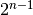
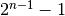
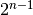
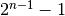
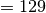
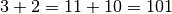

Integer Overflow¶
An integer overflow occurs when an arithmetic operation attempts to create a numeric value that is outside of the range that can be represented with a given number of digits, either larger than the maximum or lower than the minimum representable value. Can compromise safety/security: crash system, or obtain privileges, or even prepare a buffer overflow, etc. Confusion between safety and security is high here.
| Size | Range | ||
| int | 2 bytes | -32.768 to 32767 | |
| int | 4 bytes | -2.147.483.648 to 2.147.483.647 | |
| unsigned int | 2 bytes | 0 to 65535 | |
| unsigned int | 4 bytes | 0 to 4.294.967.295 | |
| short | 2 bytes | -32.768 to 32767 | |
| unsigned short | 2 bytes | 0 to 65535 | |
| long | 8 bytes | -922 3372036854775808 to 922 3372036854775807 | |
| unsigned long | 8 bytes | 0 to 1844 6744073709551615 | |
| float | 4 bytes | 1.2E38 to 3.4E+38 | (6 decimal places) |
| double | 8 bytes | 2.3E308 to1.7E+308 | (15 decimal places) |
| long double | 10 bytes | 3.4E4932 to 1.1E+4932 | (19 decimal places) |
Encoding principles¶
 bits, one can code
 numbers. bits, up to  positive digits and
negative digits and
bits, one can code
 numbers. bits, up to  positive digits and
negative digits and  . To retrieve the value,
on bits encoding: take the value of the
. To retrieve the value,
on bits encoding: take the value of the  first
right bits, and subtract .
first
right bits, and subtract .Signedness bug overflow¶
Signedness bugs occur when an unsigned (signed) variable is interpreted as signed (unsigned).
- (on 8 bits) (signed)  (unsigned)
This can happened when :
- Signed integers are used in arithmetic operations
- Signed integers are compare to unsigned ones. When a signed digit is compared with an unsigned one, they’re both considered unsigned. Check compiler’s specification for more!
/* arithmetic sbo */
int main() {
short nb1, nb2, res; //2 bytes
res = 0;
printf ("enter first digit : "); //10 000
scanf("%hd", &nb1);
printf("enter second digit : "); //22 769
scanf("%hd ", &nb2);
res = nb1 + nb2;
printf("%hd + %hd = %hd \n", nb1, nb2, res); // answer: -32 767
}
/*comparison sbo */
int main() {
int a = 25; unsigned int b = 1000;
if (a>b) printf ("bravo"); //= result
else printf ("failure");
}
/*comparison sbo */
int copy(char * buf , int len){
char kbuf[800]; //buffer overflow
if(len > sizeof(kbuf)) return 1; //Put a negative value for len , it will pass
//But will then be interpreted as a huge positive number by memcpy
return memcpy(kbuf,buf,len); //memcpy takes an unsigned int as third argument
}
Truncation bug¶
Truncation bugs occur when the value assigned to a variable exceeds its capacities.
- On 2 bits, But
 is 3 bits, by truncation one removes the top left
one, hence we get 01
is 3 bits, by truncation one removes the top left
one, hence we get 01
This can happened :
- mostly in arithmetic operations
 This is a software engineering problem, a safety issue but also illustrate a security one link to software reuse/update.
This is a software engineering problem, a safety issue but also illustrate a security one link to software reuse/update.
Beyond classical integer overflow¶
Different types of integers are encoded with different numbers of bits. If one tries to assign a 8 bits variable integer to a 4 bits variable integer, then a truncation occurs. That is, the four biggest bits are not taken into account
this assignment is a type of integer overflow.
int main(int argc , char* argv[]) {
unsigned short s; //Max val = 65535
int i;
char buf[80];
i = atoi(argv[1]); //i=65536 and s=0
s = i ;
if(s>=80) return 1; //pass
printf("s = %d n", s);
memcpy(buf,argv[2],i);
buf[i] = '\0'; // = buf[65536] => buffer overflow
printf("%s n", buf );
return 0;
}
Prevention/Detection¶
Use of preconditions
Perform each individual arithmetic operation using the next larger primitive integer type and explicitly checking for overflow
result = extend(s1) op extend(s2) if (result< MIN || result > Max) then call failure handler endif
Use dedicated classes in some programming languages (e.g BigInteger, Bigdecimal in java)
Use CPU flag postcondition test
(result, flag) = s1 checked_op s2 if (flag) then call failure handler endif
Exploits¶
- Mostly to crash the system, or to obtain very basic game privileges (e.g civilization)
- But then can prepare to “bigger exploits” : Integer overflow can help Buffer Overflow (we have just seen that)
/* Exploits: fail in openssh */
int main(int argc , char* argv[]) {
int nresp = packet_get_int(); //Usually: 32 bits, i.e., 4294 967 296. If nresp = 1 073 741 824
if(nresp > 0) { //sizeof(char*) = 4 bytes (address), unsigned int
response = xmalloc(nresp*sizeof(char*)); //1 073 741 824 * 4 = 4 294 967 296 => max value => truncation to 0
for(i = 0; i < nresp ; i++)
response[i] = packet_get_string(NULL); //buffer overflow
}
}